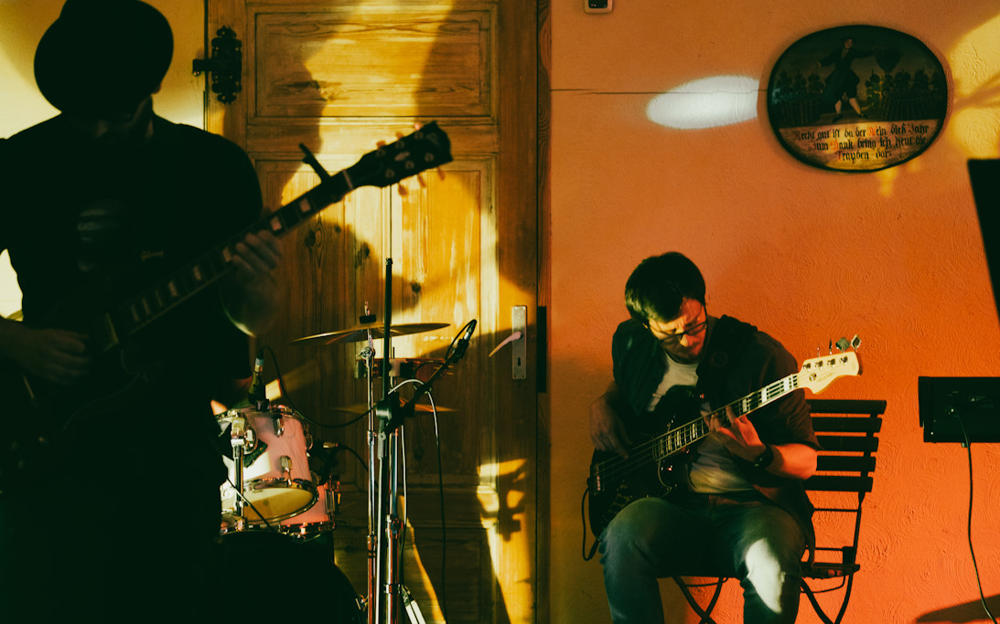
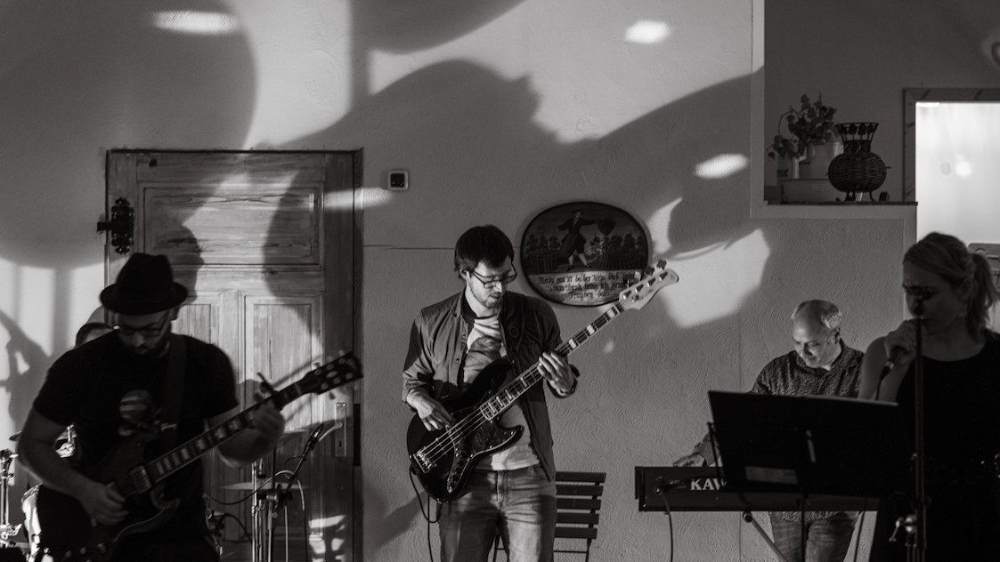
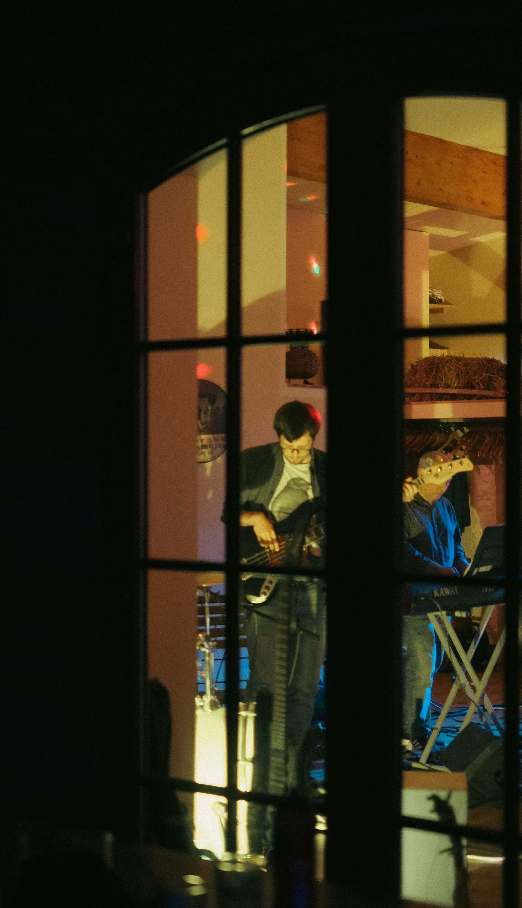

MUSIC
I once recorded myself playing the most unforgettable Cardiacs song.
Tim would have hated it. Rest in peace.
I'm an avid musician and enjoy composition, recording and performing across all genres of music. I play the electric bass and have founded a few bands. I may post some material here from concerts and sessions.





(under construction)